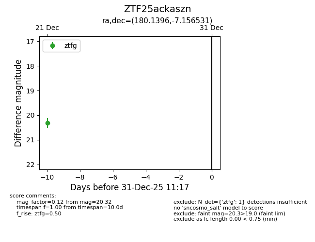
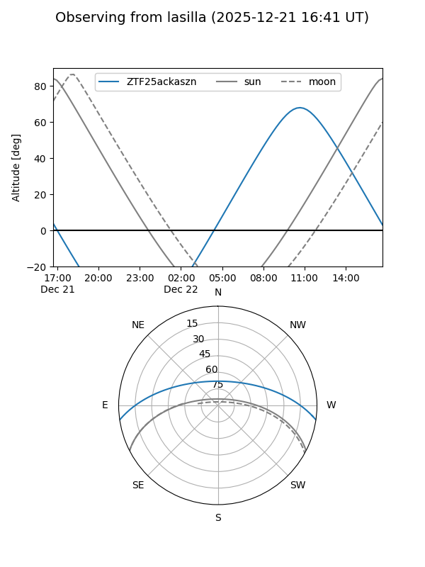
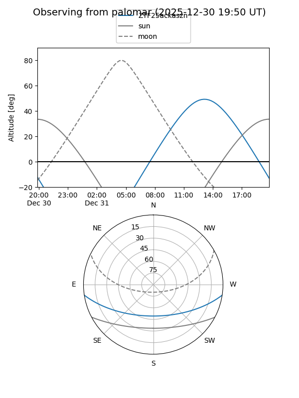

ZTF25ackaszn
Target ZTF25ackaszn at 2025-12-21 13:02
Aliases and brokers:
FINK: fink-portal.org/ZTF25ackaszn
Lasair: lasair-ztf.lsst.ac.uk/objects/ZTF25ackaszn
ALeRCE: alerce.online/object/ZTF25ackaszn
alt names
ZTF25ackaszn (ztf,fink_ztf)
Coordinates:
equatorial (ra, dec) = 180.1396,-7.15653
equatorial (HMS+DMS) = 12:00:33.51,-07:09:23.51
galactic (l, b) = (281.3466,+53.56936)
Flags:
Photometry:
last ztfg=20.32
1 ztfg detections
Lightcurve

Visibility


Additional plots